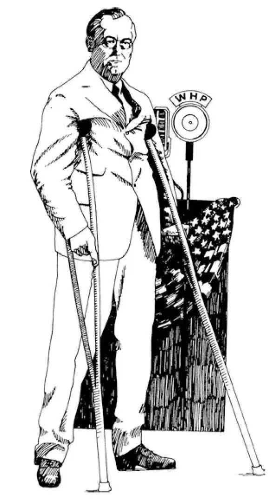

85
A Short Twenty Years
短短二十年

HOW long is a piece of string? That's a silly question and probably would get a silly answer.
How long is twenty years? That sounds like a silly question too, but it's not as silly as it sounds. To a dog twenty years is a long time, more than a lifetime. To a man, twenty years is not so long. In the history of the world, twenty years is just a tiny moment.
It was twenty years—twenty years and a few months—between the end of World War I and the start of World War II. Now, twenty years between two huge world wars is a very short time. Most countries had not fully recovered from World War I before World War II began. This chapter is about those twenty years of peace.
When World War I ended, people everywhere hoped and prayed that there would be no more wars. World War I was even called the “War to End All Wars.” When World War I ended, the leaders of the Allied governments met at Versailles in France and drew up a peace treaty known as the Treaty of Versailles.
The treaty said that Germany should have a little army big enough to keep order in Germany but not big enough to make war with. There were to be no army or navy airplanes in Germany, no army tanks, and no submarines. The treaty also said that Germany would have to pay large sums of money to the Allied nations to help pay for what it had destroyed in the war.
Then to try to keep the peace, a League of Nations was set up with headquarters in Switzerland. The greatest invention I can think of would be some thing or some way to keep wars from starting. People hoped the League of Nations would be the great invention that would keep wars from breaking out. Each country was to send men to act for that country at the meetings of the League. When war threatened, the League would warn the warlike country and ask it to bring its case before the judges of a World Court and let them settle the trouble there instead of having the question decided by war.
The League of Nations tried, but it didn't succeed. There were several reasons for this. One was that the United States decided not to join the League. The United States did not want the League to be able to say when the United States would have to send soldiers to help stop another country from making war, in case war started in spite of the World Court's decision.
Another reason that the League didn't work was that there was no way it could make nations do what it told them. It could only ask that the nations do what it wanted them to do. It could not make them do it.
A sign may say “KEEP OFF THE GRASS.” If you walk on the grass in spite of the sign, the sign can't stop you, but a nearby policeman can. The League of Nations was like a “KEEP OFF” sign without a policeman.
Never before, I suppose, did so many people hope and pray that wars could be stopped. Other ways to stop wars, besides the League of Nations, were tried, too.
People thought that if nations were not so heavily armed, it might help. The countries with the biggest navies held a conference in Washington and agreed to limit the size of their navies. People thought, too, that if all the countries of the world solemnly promised not to make war, it might help. So an anti-war treaty was made. More than fifty countries signed this treaty and promised to give up war.
Yet wars did break out again, in spite of the League of Nations, in spite of limiting the navies, in spite of the anti-war treaty. There was no force in the world that could be used to stop a war when one started. When a building catches fire in a city, someone calls the fire department. Firemen come rushing with their fire engines and put the fire out. When a fist fight starts in a city, someone calls the police department, and policemen are sent to stop the fight.
But there was no fire department or police department to put out a war when it started. Before long, wars started again. Even the twenty years of peace between world wars were not free from wars. The first new war was in Asia.
After Commodore Perry had opened Japan to foreign trade, Japan had quickly become an industrial nation. Japan had learned the bad things as well as the good things of our civilization. It had built a large war-making modern army and navy. In 1931, Japan used that army to take the northern part of China, called Manchuria, away from China. Later the Japanese started to take over all of China. Of course the Chinese fought to keep the Japanese from doing this. Other countries wrote letters to the Japanese government saying they did not like to see Japan using its armies against China.
“What about that anti-war treaty you signed?” these other countries said to Japan.
But as no other country tried to stop the Japanese by force, the war continued. The Chinese fought hard, but they had very few army supplies and soon Japan had taken all the eastern coast of China and driven the Chinese government into western China. The League of Nations didn't know how to stop the war, and this war was still going on when World War II started.
While this was going on in Asia, another war had started in Africa. The Italian army marched into the ancient country of Ethiopia. Ethiopia was the same country as the ancient Axum. Do you remember Axum's famous king, who became a Christian in 350 A.D.? That's right. His name was Ezana.
Since the time of King Ezana, Ethiopia had always been independent and ruled by a king. Italy had tried to conquer Ethiopia fifty years earlier and had failed. Now the Ethiopian king's army had a few guns, but his soldiers were mostly armed with spears. The Italian army used airplanes, bombs, artillery, and even poison gas, and so it soon conquered the Ethiopians.
Then a civil war broke out in Spain, in Europe. One set of Spaniards fought another set of Spaniards about which group would govern Spain. Instead of trying to stop the war, Russia sent soldiers to help one side, and Germany and Italy sent soldiers to help the other side.
One, two, three—war, war, war—China, Ethiopia, Spain. The League of Nations hadn't been able to stop the Japanese from attacking China. It couldn't keep Italy from taking Ethiopia though it tried to punish Italy by stopping other countries from sending supplies to Italy. But Italy took Ethiopia anyway. The League had not stopped the war in Spain. As an invention for stopping wars, the League of Nations hadn't worked.

President Roosevelt about to address the nation on the radio
罗斯福总统正要发表全国广播讲话
There were other important happenings besides wars in this twenty years of peace. For the first ten years of the peace, people were busy making and selling and buying and using the peacetime things that they could not enjoy while World War I was going on. In the United States, almost everyone who wanted to work could get a job. Factories were busy turning out everything from automobiles to clothes-pins. Business was booming. People were making money and spending it. Many people thought these booming times would go on forever. But they were wrong. The boom didn't last. What businessmen call a depression followed the boom. Good jobs became scarce. Millions of people could not get jobs at all. Factories could not sell as many things as they could make. Many factories had to close. This caused more people to be without jobs. How can a man or woman get money to buy food or clothes or anything if he or she can't find a job? Thus the last ten years of the peace were a troubled time of depression.
The depression had been going on for several years and people were getting desperate when a new president, Franklin Delano Roosevelt, was elected. He became president just when the depression seemed hopeless, when everything looked black and gloomy. People were afraid of what would happen to them. The first day he was president, Roosevelt said, “The only thing we have to fear is fear itself.” Roosevelt seemed to know what to do. He asked that laws be passed so money could be given to people who could not find work.
Then the government hired thousands of people to work in any way they could. Artists painted pictures, musicians gave concerts, writers wrote books, laborers raked leaves, dug ditches, built parks, and did many other kinds of work; and all these people were paid for their work by the government. Roosevelt tried out many new ways of running the country. His way of being president became known as the New Deal.
Roosevelt helped the poor people at the expense of the rich people. And yet Roosevelt's family had always been rich, and Roosevelt himself was a rich man. When he was thirty nine years old, he had become ill with polio that left him with his legs paralyzed. After that he could stand only with the help of canes and with steel braces on his legs. He couldn't walk at all but could take a few steps leaning on someone's arm. But in spite of such a handicap, Roosevelt twice became governor of the state of New York and at last president of the United States.
A president of the United States is elected for four years. Every four years the people vote for their next president. Roosevelt was elected for a second four years. The Father of his Country, George Washington, had been made president for two terms of four years each. Washington had refused to be elected for three terms. Since George Washington had refused a third term, no president had ever been elected three times. But when Franklin D. Roosevelt's eight years were up, he became president a third time—for four more years, four years longer than any president had been before. And when twelve years were up, Franklin D. Roosevelt was elected president a fourth time. That would have made sixteen years as president for Roosevelt if he had not died before his fourth term was over. Roosevelt was president from 1933 to 1945. No other man had been president more than eight years, nor been elected more than twice. Roosevelt had been elected four times in a row.
Roosevelt wasn't able to stop the depression right away. He did show people that everything wasn't hopeless, and he did keep people from going hungry and perhaps starving. But it cost the American people millions and millions of dollars.
Before Roosevelt's third term had begun, the twenty years of peace were over. World War II had started in Europe. The people of the United States hoped their country could keep out of this war. But Roosevelt felt that America might be attacked even though the war was far away across the ocean. He led the country into getting ready for war in case it came to us. And when we were attacked, Roosevelt led the country through the war to victory against Germany, Japan, and Italy. He died a month before the Germans surrendered.
Twenty years of peace—twenty years of an invention-to-stop-wars that didn't work—a boom and depression, and then the biggest and worst war of all. How long is twenty years? It was a short time indeed between two world wars.
【中文阅读】
一截绳子有多长？这是个很傻的问题，如果有人回答这样的问题，答案大概也是很荒唐的。
二十年有多长？这听上去也像一个很傻的问题，但是实际上它并不是听起来那样傻。对一只狗来说，二十年是很长的时间，比它一生都长。对一个人来说，二十年不是很长。在世界历史中，二十年只是一个瞬间。
从第一次世界大战结束到第二次世界大战开始，其间只有二十年——二十年零几个月。两次世界大战之间的这二十年是非常短的一段时间。大多数国家还没有完全从第一次世界大战中恢复过来，第二次世界大战就开始了。这一章的内容就是关于这二十年的和平岁月。
第一次世界大战结束后，世界各地的人们都希望并祈祷不再有战争发生。第一次世界大战甚至被称为“结束所有战争的战争”。第一次世界大战结束时，各协约国的政府领导人在法国的凡尔赛会面，起草了一份和平条约叫《凡尔赛和约》。
和约规定德国军队的小规模只限于能够维持德国国内的秩序，但是决不可大到能够发动战争。无论德国的陆军或海军都不能有飞机，也不能有坦克和潜水艇。和约还要求德国必须向协约国赔偿大笔款项，以帮助补偿德国在战争中给这些国家造成的损失。
之后，为了努力维持和平，一个国际联盟成立了，总部设立在瑞士。如果有人发明出某个东西或某种方法能防止战争发生，我想不出世界上还会有什么发明比这更伟大的了。人们希望国际联盟将是一项可以阻止战争爆发的伟大发明。每个国家都派出代表出席国联的会议。当战争迫近时，国联就会警告好战国，要求它把自 己的情况提交给国际法庭的法官们审理，让他们在那里解决争端而不是用战争解决问题。
国际联盟做出了努力，但是没有成功。这有几方面的原因。原因之一是美国决定不参加国联。美国不希望出现这样的局面：万一哪个国家不顾国际法庭的裁决，发动了战争，国联能够决定美国何时必须派兵去帮助阻止战争爆发。
国联没有成功的另一个原因是国联无法让各国按自己的要求去做。它只能向各国提出自己的希望，却不能命令各国照此执行。
一块告示牌上也许写着“请勿践踏草地”。如果你不顾警示，仍然走在草地上，这块告示牌也奈何不了你，但是附近的警察可以阻止你。国际联盟就像一块“请勿……”的告示牌，附近却没有警察。
我想，在此之前从未有这么多人希望并祈祷可以避免战争。除了国际联盟之外，人们还尝试了其他防止战争的方法。
人们想如果各个国家没有装备大量武器，或许会有所帮助。那些海军强国在华盛顿举行了会议，同意限制各自的海军规模。人们还想到如果世界上所有的国家都郑重承诺不发动战争，或许会有作用。于是达成了一项反战条约。五十多个国家签署了这项条约，承诺放弃战争。
然而尽管有国际联盟，尽管海军受到了限制，尽管有反战条约，战争还是确实再次爆发了。当战争爆发时，世界上没有任何武装部队可以派去阻止战争。城里的大楼着火时，有人给消防署打电话。消防员开着消防车赶来扑灭大火。当城里发生聚众斗殴，有人给警察部门打电话，警察就会派去制止斗殴。
但是战争爆发时，没有消防署或警察部门扑灭战火。不久以后，一场场战争打响了。甚至两次世界大战之间的二十年和平时期也并没有摆脱战争。新的战争首先在亚洲爆发了。
在美国海军准将佩里打开了日本对外贸易的大门后，日本很快成为一个工业国家。日本学到了西方文明的好东西，同时也学到了其中的坏东西。日本建立了庞大的可以进行战争的现代化陆军和海军。1931年，日本用陆军从中国夺走了被称为“满洲”的中国北部地区。后来日本人开始占领整个中国。中国人当然奋起反抗，阻止日本人的侵略。其他国家写信给日本政府，表示他们不愿意看到日本军队对中国用兵。
“难道你们忘了你们签署的反战条约吗？”这些国家纷纷责问日本。
但是没有任何国家试图用武力阻止日本人，所以战争就继续下去了。中国人奋勇作战，但是他们几乎没有军备供应，很快日本就占领了中国整个东海岸，把中国政府赶到了中国西部。国际联盟不知道该如何阻止这场战争，当第二次世界大战爆发时，侵华战争还在继续。
亚洲的战争还在继续时，非洲的战争又爆发了。意大利军队开进了古老的国家埃塞俄比亚。埃塞俄比亚是古代阿克苏姆王国所在的地方。你还记得著名的阿克苏姆国王吗？他在公元350年成为基督徒的。他的名字是埃扎纳。
自国王埃扎纳时期以来，埃塞俄比亚一直是独立的国家，由国王统治。五十年 以前意大利就企图征服埃塞俄比亚，不过失败了。此时埃塞俄比亚国王自己的卫队才有一些枪支，他的士兵大多数只用长矛作武装。意大利军队使用飞机、炸弹、大炮，甚至毒气，所以很快就攻占了埃塞俄比亚。
此时在欧洲的西班牙爆发了一场内战。在该由哪一帮人统治西班牙这个问题上，一派西班牙人和另一派西班牙人打起仗来。俄国没有试图阻止战争，而是反而派兵去其中帮助一方，而德国和意大利则派兵去帮助另一方。
一、二、三——战争，战争，战争——中国、埃塞俄比亚、西班牙。国际联盟无法阻止日本进攻中国，也不能阻止意大利占领埃塞俄比亚。尽管它试图阻止其他国家向意大利提供军需物资来惩罚意大利，但是意大利还是占领了埃塞俄比亚。国联也阻止不了西班牙内战。作为阻止战争的一项“发明”而言，国际联盟并没有起到作用。
在这二十年的和平时期里，除了战争还发生了其他一些重要的事。第一个十年和平时期，人们忙于生产、销售、购买和使用各种和平时期的产品，这些产品是他们在战时无法享受到的。在美国，几乎每个想工作的人都能得到一份工作。各家工厂都忙着生产各种物品，大到汽车，小到晾衣夹。商业日益繁荣。人们在赚钱，也在花钱。许多人认为这些繁荣兴旺的时期会一直延续下去。但是他们错了。繁荣并没有持续下去。繁荣过后就是商人们所称作的“经济大萧条”。好的工作奇缺。数百万人根本找不到工作。工厂卖不掉生产出来的那些产品。许多工厂不得不关闭。这就导致更多的人失业。如果人们找不到工作，又怎么能挣到钱去买食物、衣服或其他生活用品呢？因此和平时期的最后十年是经济大萧条的混乱时期。
萧条持续了好几年，正当人们变得绝望的时候，富兰克林•德拉诺•罗斯福当选为美国新总统。正当大萧条似乎无望，一切看上去都暗淡无光、令人沮丧的时候，他成了总统。人们对今后的日子忧心忡忡。罗斯福上任的第一天说：“我们唯一需要害怕的事情是害怕本身。”罗斯福似乎知道该怎么办。他要求通过一些法律，可以名正言顺地把钱补贴给无法找到工作的人。
接着政府雇佣了成千上万的人从事他们力所能及的工作。艺术家画画，音乐家举行音乐会，作家写书，工人耙叶子、挖沟渠、建公园和做其他各种工作；所有这些人的工资由政府支付。罗斯福尝试许多新办法来管理国家。他的施政纲领方式被称为“新政”。
罗斯福让富人付钱来帮助穷人。然而罗斯福家族一直很富有，罗斯福本人也是有钱人。他39岁时患了脊髓灰质炎，造成双腿瘫痪。之后，他只能依靠手杖和腿上的钢支架才能站立。他无法行走，但是靠别人扶着可以挪动几步。尽管有这样的残疾，罗斯福却两次成为纽约州州长，最后成为美国总统。
美国总统四年选举一次。每隔四年人们投票选举下一位总统。罗斯福在第二个四年再度当选总统。美国国父乔治•华盛顿连任两任总统，任期八年。华盛顿拒绝担任第三任总统。自从乔治•华盛顿拒绝第三次任总统以后，还没有人三次当选为总统。但是当富兰克林•D•罗斯福的八年任期结束时，他第三次当选总统——又多了四年任期，比之前任何一位总统的任期都至少多出四年。在十二年任期结束时，富兰 克林•D•罗斯福第四次当选总统。罗斯福在第四次任期结束前去世了，要不然他就会当十六年的总统。罗斯福当政是从1933年至1945年。没有其他人当总统超过八年，也没有其他总统三度连任。罗斯福总统四度连任。
罗斯福并不能一下子就把经济萧条消除。但他确实让人们看到并不是一点希望都没有。他做到让人们免于挨饿，还可能是免于饿死。但这花费了美国人民无数的美元。
在罗斯福第三个任期开始之前，二十年的和平时期结束了。第二次世界大战已经在欧洲爆发了。美国人民希望自己的国家能够置身于战争之外。但是罗斯福觉得即使战争是在遥远的大洋彼岸，美国仍然有可能会遭到攻击。他领导国家进入战备状态以防万一。当美国遭到攻击后，罗斯福领导国家在与德国、日本和意大利的战争中走向胜利。在德国人投降前的一个月他去世了。
二十年的和平时期——人们“创造”国联去阻止战争而又无能为力的二十年——一个经济繁荣走向萧条的时期，接着就发生了历史上最大、最残酷的战争。二十年有多久？它的确只是两次世界大战之间一段很短的时间。